- rails generate controller contacts
create app/controllers/contacts_controller.rb
create app/views/contacts
create test/controllers/contacts_controller_test.rb
create app/helpers/contacts_helper.rb
create app/assets/javascripts/contacts.coffee
create app/assets/stylesheets/contacts.scss
- rake routes
gives a list of all the routes in application
- The new method will return a new object while create will return the object and save it to the database. Using the new method, an object can be instantiated without being saved
- def _________ end creates a new custom method on the object
- rails generate scaffold Post name:string title:string content:text
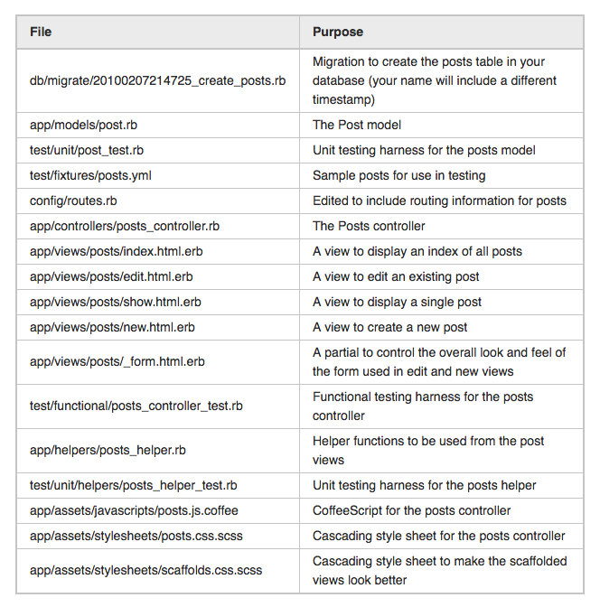
- after you need to rake db:migrate
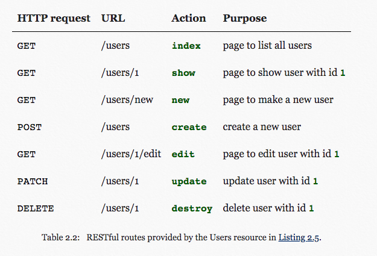
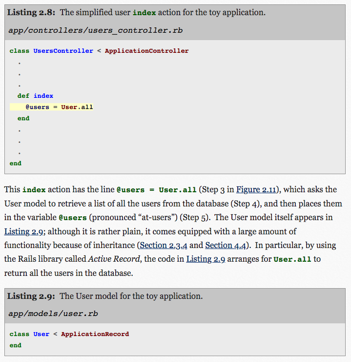
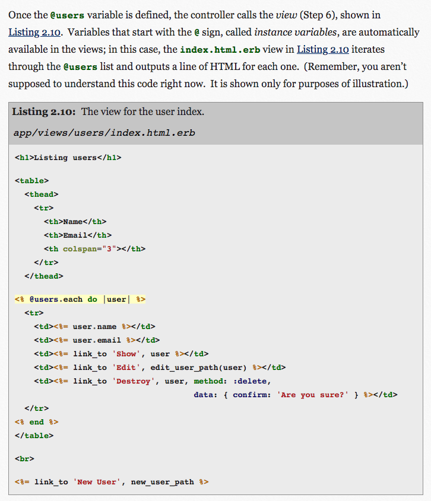
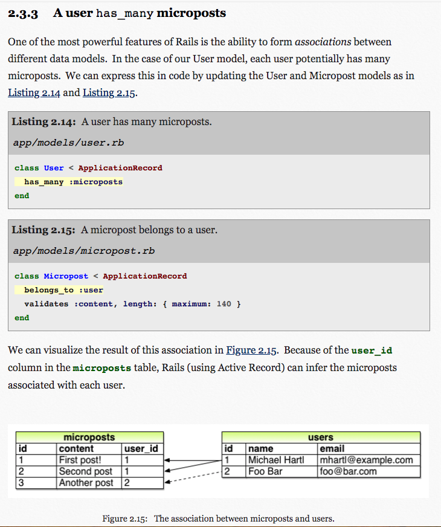
- String interpolation
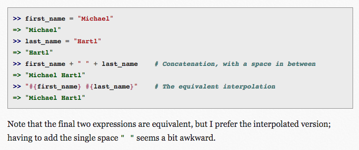
- Model generator
- Here the table name is plural (users) even though the model name is singular (User), which reflects a linguistic convention followed by Rails: a model represents a single user, whereas a database table consists of many users.
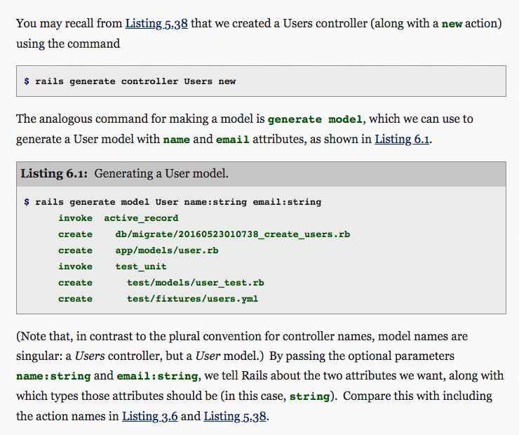
- Sandbox
- rails console --sandbox
- common commands
- user = User.new(name: "Michael Hartl", email: "mhartl@example.com")
- user.save
- User.create(name: "A Nother", email: "another@example.org")
- access things with dot notation ex: user.name user.email
- User.find(1)
- User.find_by(email: "mhartl@example.com")
- User.all
- User.count
- http://www.rubular.com/ test ruby regular expressions
- user validation example
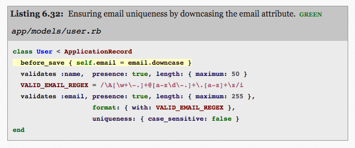
- resources
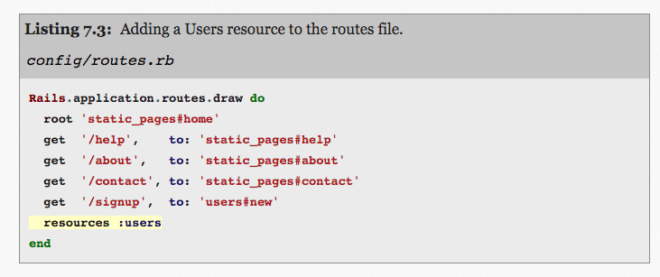
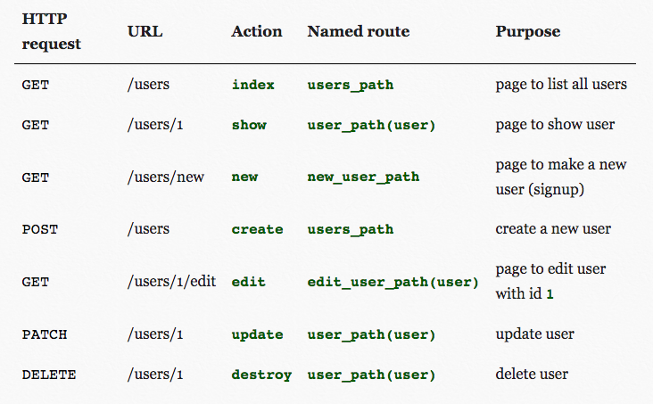
- params hash
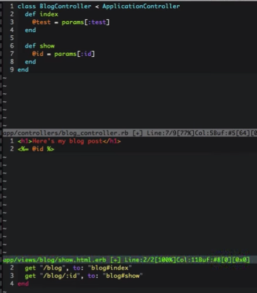
- heroku migration
- heroku run rails db:migrate